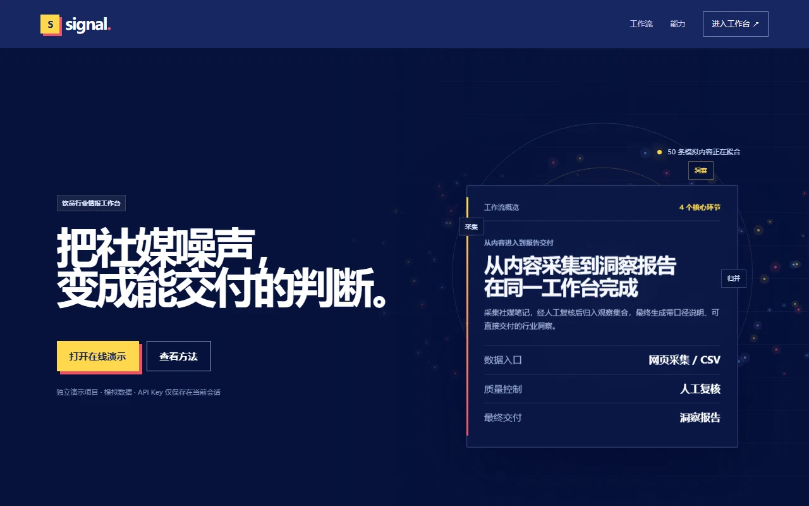

重点案例 / AI 应用开发
Signal｜饮品行业情报工作台
为饮品品牌的市场与内容团队解决社媒信息分散、人工归并混乱、分析报告难以交付的问题。

业务问题
饮品行业的新品、联名和活动信息散落在社媒中，团队需要从零散内容里形成判断，但手工整理难以保持分类一致，也容易丢失证据。
系统架构
左右滑动查看图中细节，也可打开完整图。
我的做法
我从实际分析流程出发，独立搭建了 Signal 工作台，串起内容采集、归并、人工复核、AI 洞察和报告交付，让每项结论都能回到原始内容核对，并通过可操作的线上演示验证完整流程。
工作流程
从原始内容到可交付报告
- 采集与导入。浏览器助手由用户主动读取当前小红书笔记的可见内容，也支持 CSV 导入；不读取 Cookie，不做批量抓取。
- 整理与复核。识别品牌与动作候选，支持分类、归并、标签和排除。报告只使用已确认、未排除的记录，确认后默认锁定。
- 统计与分析。按品牌、动作、新品、联名、活动等维度统计内容数量和点赞表现；接入 DeepSeek 兼容接口辅助分析。
- 报告交付。结论可回溯到原始内容，并支持 CSV 与 Word 导出。
我的个人贡献
我完成浏览器采集助手、数据导入与整理、人工复核、统计报告、AI 分析、文件导出，以及 GitHub 与 Render 上线，形成了可操作的端到端产品流程。
设计取舍
AI 辅助，不替代证据判断
固定提示词要求模型区分事实、推断、建议和待验证信息，并说明证据与样本限制。点赞只作为内容互动信号，不直接解释为销量或市场份额。没有 API Key 时，演示环境也能查看预置分析示例。
技术与边界
工作台使用 Node.js、原生 HTML/CSS/JavaScript 与 PapaParse。统计口径由确定性代码计算，AI 生成内容经过人的检查；当前页可见内容的主动采集限定了浏览器扩展的权限范围。
线上版本含合成演示样本，用于展示流程，并不代表真实品牌表现；目前没有可核验的客户提效或业务增长数据。